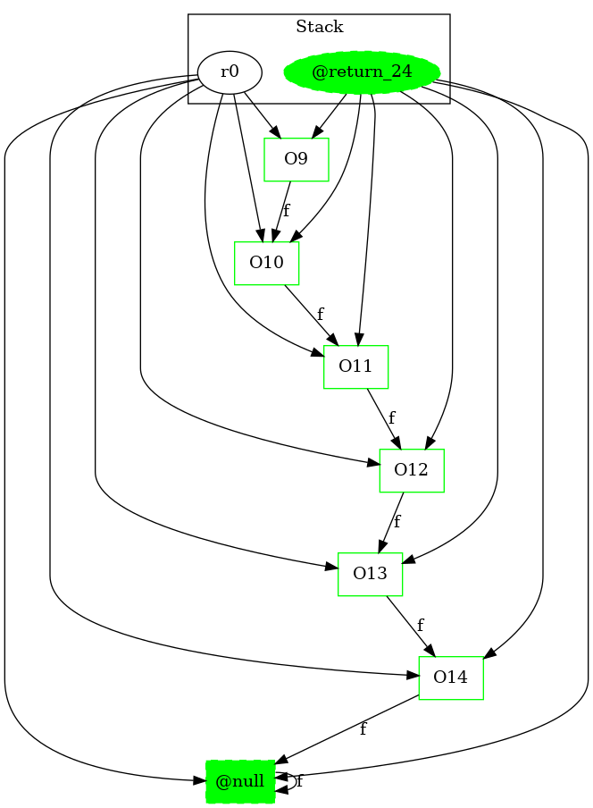

-1 : r0 := @parameter0: Test3Node
21 : if r0 == null goto return r0
22 : r0 = r0.|Test3Node: Test3Node f|
22 : goto [?= (branch)]
24 : return r0 ->class soot.jimple.internal.JReturnStmt {getOp: class soot.jimple.internal.JimpleLocal}
